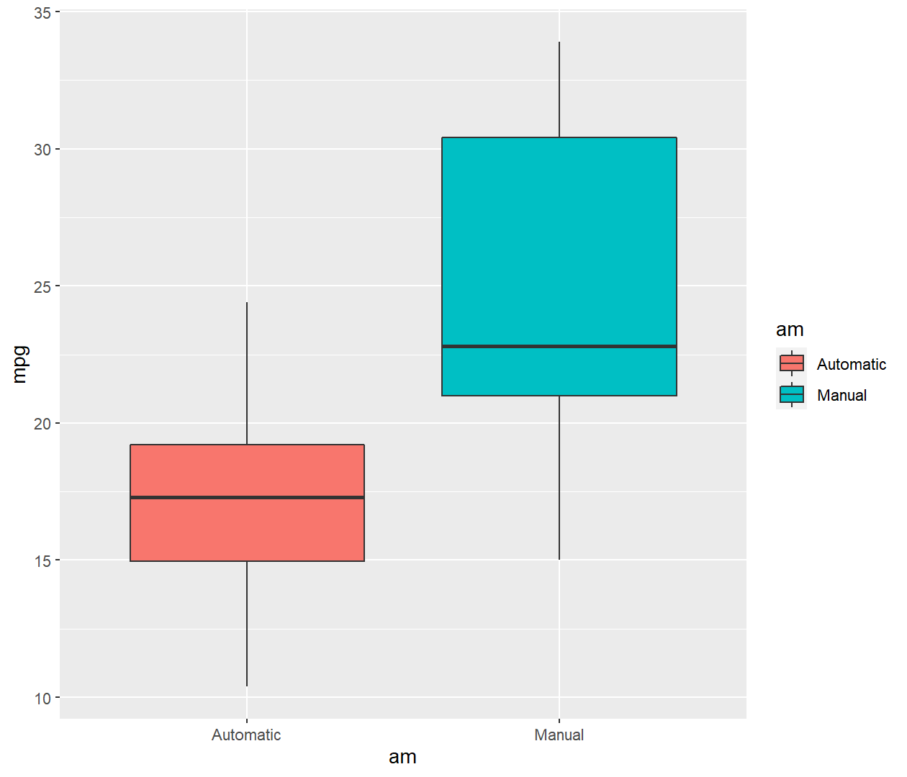
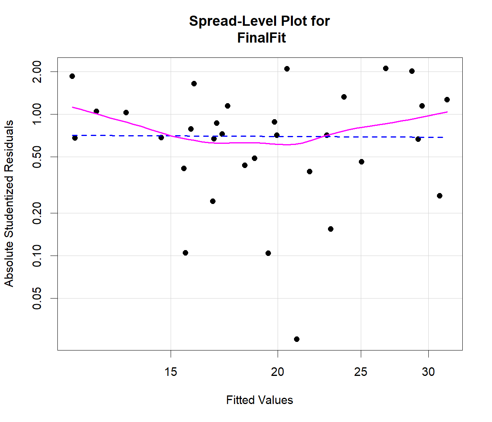
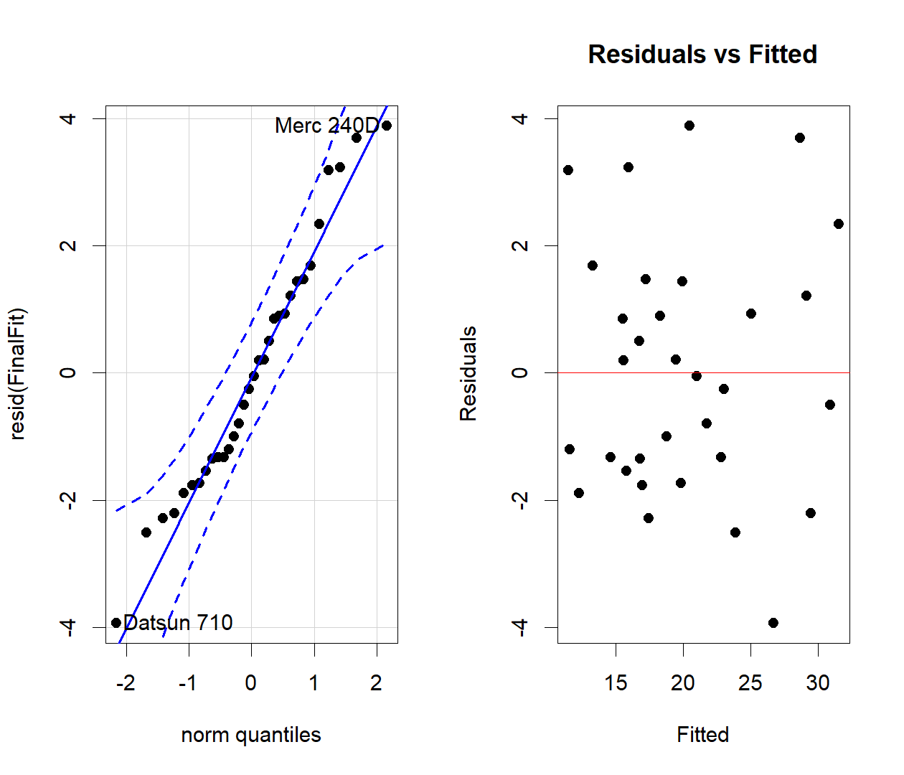
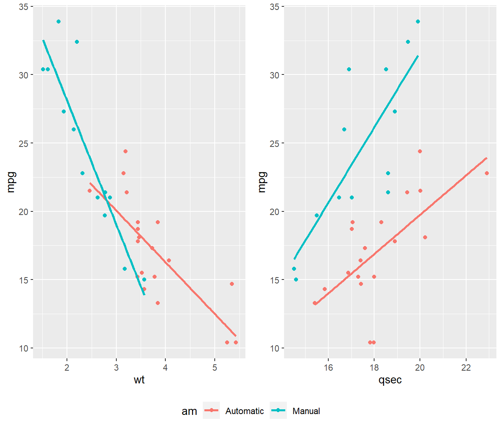

La regresión múltiple se realiza generalmente con álgebra matricial. El modelo de regresión lineal con dos variables predictoras se define como:
\[Y_i = \beta_0+\beta_1x_1+\beta_2x_2+\varepsilon_i\]
Y también se denomina modelo de regresión de primer orden, ya que sus variables predictoras son lineales. El modelo puede extenderse al caso general con \(p\) variables predictoras.
\[Y_i = \beta_0+\beta_1x_1+\beta_2x_2+\dots+\beta_px_p+\varepsilon\]
El cual también se puede escribir como:
\[Y_i = \beta_0+\sum_{k=1}^{p}\beta_kx_k+\varepsilon_i\] donde,
En términos matriciales, el modelo de regresión múltiple se puede expresar como:
\[\underset{n\times1}{Y}=\begin{bmatrix} Y_1\\ Y_2\\ \vdots\\ Y_n \end{bmatrix} \quad \underset{n\times p}{X}=\begin{bmatrix} 1 & x_{11} & x_{12} & \dots & x_{1p}\\ 1 & x_{21} & x_{22} & \dots & x_{2p}\\ \vdots & \vdots & \vdots & \ddots & \vdots\\ 1 & x_{n1} & x_{n2} & \dots & x_{np}\\ \end{bmatrix} \quad \underset{p\times 1}{\beta}=\begin{bmatrix} \beta_0\\ \beta_1\\ \vdots\\ \beta_p\\ \end{bmatrix} \quad \underset{n\times 1}{\varepsilon}=\begin{bmatrix} \varepsilon_1\\ \varepsilon_2\\ \vdots\\ \varepsilon_n\\ \end{bmatrix}\]
Con lo cual, se puede reescribir la ecuación como:
\[Y=X\beta+\varepsilon\]
Al igual que en el caso de la regresión lineal simple, el objetivo de la estimación de mínimos cuadrados es encontrar valores para los parámetros \(\beta_0,\beta_1,...,\beta_p\) que minimicen el error estándar. Este valor se denotará como \(Q\) y se define como:
\[Q=\sum_{i=1}^{n}(Y_i-\beta_0-\beta_1x_1-\dots-\beta_px_p)^2\]
El vector (de los parámetros estimados se denota como:
\[\underset{p\times 1}{b}=\begin{bmatrix} b_0\\ b_1\\ \vdots\\ b_p\\ \end{bmatrix}\]
Por lo tanto, las ecuaciones de mínimos cuadrados para el modelo de regresión múltiple se pueden representar como:
\[X^\prime Xb=X^\prime Y\]
Con estimadores
\[\underset{2\times 1}{b}=(\underset{2\times 2}{X^\prime X})^{-1}(\underset{2\times 1}{X^\prime X})Y\]
La respuesta ajustada también se puede representar como un vector denotado \(\hat{Y}\) con valores \(\hat{Y_i}\) y residuos \(\varepsilon_i=Y_i − \hat{Y_i}\).
\[\underset{n\times 1}{\hat{Y}}=\begin{bmatrix} \hat{Y_1}\\ \hat{Y_2}\\ \vdots\\ \hat{Y_n}\\ \end{bmatrix} \quad \underset{n\times 1}{\varepsilon}=\begin{bmatrix} \varepsilon_1\\ \varepsilon_2\\ \vdots\\ \varepsilon_n\\ \end{bmatrix}\]
Los valores ajustados también se pueden escribir como:
\[\underset{n\times 1}{\hat{Y}}=Xb\]
Con residuales
\[\underset{n\times 1}{\varepsilon}=Y-\hat{Y}=Y-Yb\]
La matriz gorro es definida como
\[H=X(X^\prime X)^{-1}X^\prime\]
Por lo tanto, el vector de valores ajustados \(\hat{Y}\) se puede expresar en términos de la matriz gorro:
\[\underset{n\times 1}{\hat{Y}}=HY\]
Con vector de residuales
\[\underset{n\times 1}{\varepsilon}=(I-H)Y\]
Al referirse brevemente ANOVA en la configuración de regresión múltiple, la suma de los cuadrados y la media de los cuadrados de cada fuente de variación se definen en términos de matriz como:
\[\begin{align*} SSE = & Y^\prime Y-b^\prime X^\prime Y=Y^\prime(I-H)Y\\ SST = & Y^\prime Y-\frac{\sum(Y^2)}{n}\\ SSR = & SST-SSE\\ MSE = & \frac{SSE}{n-p}\\ MSR = & \frac{SSR}{p-1} \end{align*}\]
El estadístico \(F\) para la relación de regresión entre la variable de respuesta y las variables predictoras sigue siendo el mismo de la regresión lineal simple:
\[F = \frac{MSR}{MSE}\]
La hipótesis nula es que no hay relación de regresión entre ninguna variable, se rechaza si el valor crítico de \(F\) supera el valor de \(F\) en un nivel de confianza (\((1-\alpha)\times 100 \%\)) dado con \(p−1\) y \(n−p\) grados de libertad.
\[F>F_{\alpha,p-1,n-1}\]
En la configuración de regresión múltiple, \(R^2\) se designa como el coeficiente de determinación múltiple y se define como:
\[R^2 = 1 − \frac{SSE}{SST}\]
Al igual que en el caso de la regresión lineal simple, \(R^2\) mide la reducción proporcional de la varianza total en la variable de respuesta asociada con las variables predictoras en el modelo. \(R^2\) solo puede aumentar a medida que se agregan más variables de predicción al modelo. \(R^2_a\), el coeficiente ajustado de determinación múltiple corrige el problema de inflar artificialmente \(R^2\) dividiendo cada suma de cuadrados por sus grados de libertad.
\[R^2_a=1-\left(\frac{n-1}{n-p}\right)\frac{SSE}{SST}\]
library(car)
library(MASS)
library(gvlma)
library(ggplot2)
library(gridExtra)
library(dplyr)
mtcars$am<-as.factor(mtcars$am)
levels(mtcars$am)<-c('Automatic','Manual')
tapply(mtcars$mpg,mtcars$am,mean)## Automatic Manual
## 17.14737 24.39231mtcars %>%
ggplot(aes(x=am,y=mpg,fill=am))+geom_boxplot()
var.test(mpg~am,data = mtcars)##
## F test to compare two variances
##
## data: mpg by am
## F = 0.38656, num df = 18, denom df = 12, p-value = 0.06691
## alternative hypothesis: true ratio of variances is not equal to 1
## 95 percent confidence interval:
## 0.1243721 1.0703429
## sample estimates:
## ratio of variances
## 0.3865615t.test(mpg~am,data=mtcars,var.equal=T)##
## Two Sample t-test
##
## data: mpg by am
## t = -4.1061, df = 30, p-value = 0.000285
## alternative hypothesis: true difference in means is not equal to 0
## 95 percent confidence interval:
## -10.84837 -3.64151
## sample estimates:
## mean in group Automatic mean in group Manual
## 17.14737 24.39231fit<-lm(mpg~.,data=mtcars)
summary(fit)$coef## Estimate Std. Error t value Pr(>|t|)
## (Intercept) 12.30337416 18.71788443 0.6573058 0.51812440
## cyl -0.11144048 1.04502336 -0.1066392 0.91608738
## disp 0.01333524 0.01785750 0.7467585 0.46348865
## hp -0.02148212 0.02176858 -0.9868407 0.33495531
## drat 0.78711097 1.63537307 0.4813036 0.63527790
## wt -3.71530393 1.89441430 -1.9611887 0.06325215
## qsec 0.82104075 0.73084480 1.1234133 0.27394127
## vs 0.31776281 2.10450861 0.1509915 0.88142347
## amManual 2.52022689 2.05665055 1.2254035 0.23398971
## gear 0.65541302 1.49325996 0.4389142 0.66520643
## carb -0.19941925 0.82875250 -0.2406258 0.81217871round(vif(fit),2)## cyl disp hp drat wt qsec vs am gear carb
## 15.37 21.62 9.83 3.37 15.16 7.53 4.97 4.65 5.36 7.91sqrt(vif(fit)) > 2## cyl disp hp drat wt qsec vs am gear carb
## TRUE TRUE TRUE FALSE TRUE TRUE TRUE TRUE TRUE TRUEstepAIC(fit,direction='both',trace=F,scope=list(upper=~.,lower=~1))$anova## Stepwise Model Path
## Analysis of Deviance Table
##
## Initial Model:
## mpg ~ cyl + disp + hp + drat + wt + qsec + vs + am + gear + carb
##
## Final Model:
## mpg ~ wt + qsec + am
##
##
## Step Df Deviance Resid. Df Resid. Dev AIC
## 1 21 147.4944 70.89774
## 2 - cyl 1 0.07987121 22 147.5743 68.91507
## 3 - vs 1 0.26852280 23 147.8428 66.97324
## 4 - carb 1 0.68546077 24 148.5283 65.12126
## 5 - gear 1 1.56497053 25 150.0933 63.45667
## 6 - drat 1 3.34455117 26 153.4378 62.16190
## 7 - disp 1 6.62865369 27 160.0665 61.51530
## 8 - hp 1 9.21946935 28 169.2859 61.30730BestFit<-update(fit,.~wt+qsec+am)
summary(BestFit)##
## Call:
## lm(formula = mpg ~ wt + qsec + am, data = mtcars)
##
## Residuals:
## Min 1Q Median 3Q Max
## -3.4811 -1.5555 -0.7257 1.4110 4.6610
##
## Coefficients:
## Estimate Std. Error t value Pr(>|t|)
## (Intercept) 9.6178 6.9596 1.382 0.177915
## wt -3.9165 0.7112 -5.507 6.95e-06 ***
## qsec 1.2259 0.2887 4.247 0.000216 ***
## amManual 2.9358 1.4109 2.081 0.046716 *
## ---
## Signif. codes: 0 '***' 0.001 '**' 0.01 '*' 0.05 '.' 0.1 ' ' 1
##
## Residual standard error: 2.459 on 28 degrees of freedom
## Multiple R-squared: 0.8497, Adjusted R-squared: 0.8336
## F-statistic: 52.75 on 3 and 28 DF, p-value: 1.21e-11vif(BestFit)## wt qsec am
## 2.482952 1.364339 2.541437sqrt(vif(BestFit)) > 2## wt qsec am
## FALSE FALSE FALSEFinalFit<-update(fit,.~am:wt+am:qsec)
summary(FinalFit)##
## Call:
## lm(formula = mpg ~ am:wt + am:qsec, data = mtcars)
##
## Residuals:
## Min 1Q Median 3Q Max
## -3.9361 -1.4017 -0.1551 1.2695 3.8862
##
## Coefficients:
## Estimate Std. Error t value Pr(>|t|)
## (Intercept) 13.9692 5.7756 2.419 0.02259 *
## amAutomatic:wt -3.1759 0.6362 -4.992 3.11e-05 ***
## amManual:wt -6.0992 0.9685 -6.297 9.70e-07 ***
## amAutomatic:qsec 0.8338 0.2602 3.205 0.00346 **
## amManual:qsec 1.4464 0.2692 5.373 1.12e-05 ***
## ---
## Signif. codes: 0 '***' 0.001 '**' 0.01 '*' 0.05 '.' 0.1 ' ' 1
##
## Residual standard error: 2.097 on 27 degrees of freedom
## Multiple R-squared: 0.8946, Adjusted R-squared: 0.879
## F-statistic: 57.28 on 4 and 27 DF, p-value: 8.424e-13anova(BestFit,FinalFit)## Analysis of Variance Table
##
## Model 1: mpg ~ wt + qsec + am
## Model 2: mpg ~ am:wt + am:qsec
## Res.Df RSS Df Sum of Sq F Pr(>F)
## 1 28 169.29
## 2 27 118.70 1 50.587 11.507 0.002153 **
## ---
## Signif. codes: 0 '***' 0.001 '**' 0.01 '*' 0.05 '.' 0.1 ' ' 1vif(FinalFit)## GVIF Df GVIF^(1/(2*Df))
## am:wt 17.50104 2 2.045342
## am:qsec 17.50104 2 2.045342spreadLevelPlot(FinalFit,pch=19)
##
## Suggested power transformation: 1.035865par(mfrow=c(1,2))
qqPlot(resid(FinalFit),pch=19)## Datsun 710 Merc 240D
## 3 8plot(fitted(FinalFit),resid(FinalFit),pch=19,
main='Residuals vs Fitted',xlab='Fitted',ylab='Residuals')
abline(h=0,col='red')
shapiro.test(resid(FinalFit))##
## Shapiro-Wilk normality test
##
## data: resid(FinalFit)
## W = 0.96823, p-value = 0.4521ncvTest(FinalFit)## Non-constant Variance Score Test
## Variance formula: ~ fitted.values
## Chisquare = 0.6460701, Df = 1, p = 0.42152durbinWatsonTest(FinalFit)## lag Autocorrelation D-W Statistic p-value
## 1 -0.1114435 2.164208 0.948
## Alternative hypothesis: rho != 0summary(gvlma(FinalFit))##
## Call:
## lm(formula = mpg ~ am:wt + am:qsec, data = mtcars)
##
## Residuals:
## Min 1Q Median 3Q Max
## -3.9361 -1.4017 -0.1551 1.2695 3.8862
##
## Coefficients:
## Estimate Std. Error t value Pr(>|t|)
## (Intercept) 13.9692 5.7756 2.419 0.02259 *
## amAutomatic:wt -3.1759 0.6362 -4.992 3.11e-05 ***
## amManual:wt -6.0992 0.9685 -6.297 9.70e-07 ***
## amAutomatic:qsec 0.8338 0.2602 3.205 0.00346 **
## amManual:qsec 1.4464 0.2692 5.373 1.12e-05 ***
## ---
## Signif. codes: 0 '***' 0.001 '**' 0.01 '*' 0.05 '.' 0.1 ' ' 1
##
## Residual standard error: 2.097 on 27 degrees of freedom
## Multiple R-squared: 0.8946, Adjusted R-squared: 0.879
## F-statistic: 57.28 on 4 and 27 DF, p-value: 8.424e-13
##
##
## ASSESSMENT OF THE LINEAR MODEL ASSUMPTIONS
## USING THE GLOBAL TEST ON 4 DEGREES-OF-FREEDOM:
## Level of Significance = 0.05
##
## Call:
## gvlma(x = FinalFit)
##
## Value p-value Decision
## Global Stat 3.13417 0.5356 Assumptions acceptable.
## Skewness 0.51648 0.4723 Assumptions acceptable.
## Kurtosis 0.48168 0.4877 Assumptions acceptable.
## Link Function 2.07096 0.1501 Assumptions acceptable.
## Heteroscedasticity 0.06506 0.7987 Assumptions acceptable.Anova(FinalFit)## Anova Table (Type II tests)
##
## Response: mpg
## Sum Sq Df F value Pr(>F)
## am:wt 209.41 2 23.817 1.094e-06 ***
## am:qsec 151.06 2 17.180 1.538e-05 ***
## Residuals 118.70 27
## ---
## Signif. codes: 0 '***' 0.001 '**' 0.01 '*' 0.05 '.' 0.1 ' ' 1p1 <- ggplot(mtcars,aes(x=wt,y=mpg,colour=am))+
geom_point()+geom_smooth(method = "lm",se = F)+
theme(legend.position="bottom")
p2 <- ggplot(mtcars,aes(x=qsec,y=mpg,colour=am))+
geom_point()+geom_smooth(method = "lm",se = F)
g_legend<-function(a.gplot){
tmp <- ggplot_gtable(ggplot_build(a.gplot))
leg <- which(sapply(tmp$grobs, function(x) x$name) == "guide-box")
legend <- tmp$grobs[[leg]]
return(legend)}
mylegend<-g_legend(p1)
grid.arrange(arrangeGrob(p1 + theme(legend.position="none"),
p2 + theme(legend.position="none"),
nrow=1),
mylegend, nrow=2,heights=c(10, 1))